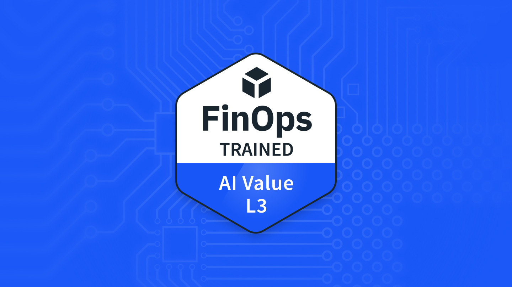

AI Value: Level 3
FinOps Foundation
Training course
FinOps & cloud costAI & machine learning
Overview
Optimizes AI workloads and their economics.
Syllabus & skills
- Architect workloads and placement.
- Optimize workloads and rates.
- Assess licensing and SaaS choices.
- Calculate AI workload unit economics.
Issuer documentation
FinOps Certified: AI Value Self-Paced Course + Certification Exam
FinOps Foundation
See Source